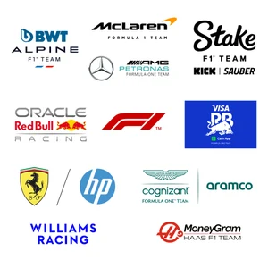

La contundente declaración de Franco Colapinto en la previa del Gran Premio de Las Vegas
El piloto argentino de Fórmula 1 sabe que su futuro depende de las próximas tres carreras. Este fin de semana intentará volver a sumar puntos para la escudería Williams.
El joven de 21 años, que apenas corrió seis carreras en la Fórmula 1, generó mucha ilusión en los fanáticos argentinos y despertó el interés de algunas escuderías. Por el momento su butaca para la próxima temporada no está asegurada, pero hay negociaciones en curso.
“Llevo solo seis carreras, pero tengo mucha confianza en mí, en el equipo y en las personas que me rodean. Todavía nos quedan tres carreras con muchas oportunidades de luchar por puntos empezando por Las Vegas. Seguiremos presionando tan fuerte como podamos hasta ver la bandera a cuadros en Abu Dhabi”, comentó.
Pilotos
Nombre
Escuderia
N°
Verstapen
Red bull
1
Perez
Red bull
11
Russell
Mercedes
63
Hamilton
Mercedes
44
Leclerc
Ferrari
16
Sainz
Ferrari
55
Norris
Mclaren
4
Piastri
Mclaren
81
Stroll
Aston Martin
18
Alonso
Aston Martin
14
Ocon
Alpine
31
Gasly
Alpine
10
Albon
Williams
23
Colapinto
Williams
43
Tsunoda
RB Racing
22
Ricciardo
RB Racing
3
Bottas
Stake
77
Zhou
Stake
24
Magnussen
Haas
20
Hulkenberg
Hass
27
Escuderias

Fin de semana
F1 GP de Las Vegas: los horarios de la carrera
Como es habitual todos los años, el GP de Las Vegas de la Fórmula 1se verá por la madrugada en Latinoamérica. El primer entrenamiento será el jueves 21 a partir de las 23.30, seguido por el segundo a las 3 de la madrugada del viernes 22. La jornada continúa el viernes a las 23.30 con el segundo entrenamiento, mientras que la clasificación tendrá lugar el sábado a las 3 AM.